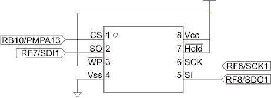

CST 321/337 Lab 5 -- SPI Interface
with the 25LC256
In this lab we will write data to and read data from the 25LC256
32Kbyte SPI serial EEProm on the AV32 board. The EEProm is connected
as shown below using the SPI1
interface.

Part 1
We will begin by writing a read and a write routine capable of
reading a byte from or writing a byte to the 25LC256 respectively.
Use a polled approach. Remember the following key points:
- The only
command that can be handled by the 25LC256 while a write is in
progress (for up to 5ms after the end of a write) is the read
status command.
- It is usually best to check status for a write in progress
before starting a read or write operation. This way, code can be
structured to do a 25LC256 write then go on with non-25LC256
operations while it is busy and only have to wait for the
previous 25LC256 write to complete when another 25LC256
operation is needed. If there were enough intervening
non-25LC256 operations, we might not have to wait at all.
- Writes must be preceded by a write enable command.
- All commands must be preceded by a CS assertion and
followed by a CS
negation. Note that CS
is controlled through RB10
under software control. The SPI master does not automatically
control it. It will have to be configured for output. Before
doing this, set the port latch for this pin to high so that when
enabled for output, it will not be immediately asserted. If we
enabled for output before setting the port pin latch high, we
would probably have CS
be low for a short period of time which could cause problems
with the 25LC256 (maybe violate a timing parameter on the
minimum time CS
can be asserted). At the very least setting the port latch for
this pin high before enabling it for output is safer. Also note that PORTB defaults to analog inputs for
the A/D converter. To use RB10 you will need to first
configure it for digital I/O using the AD1PCFG sfr. (See section
17 of the Family Reference Manual.)
- As discussed in class, we will set CKE = 0, CKP = 1, SMP = 0
and BRG so that the SCK has a period of no less than 220ns so
that the PIC32 and 25LC256 setup and hold times are met for data
bits on their inputs.
- As (will yet be)
discussed in class, the 25LC256's CS to first data bit sampling requirement
(parameter 2 - 100ns min) will be automatically met if we select
CKE = 0 and CKP = 1.
- Note that after RBF, and we need to wait at least 90ns before
CS negation in
order to meet the 25LC256's timing requirement 3. (This is 200ns
after the positive edge in the middle of the last bit shifted
out of the 25LC256 until CS can be negated, but RBF is not set until
(at the earliest) 110ns later at the next negative edge of the
clock). As discussed in class, the additional 90ns would require
8 SYSCLK cycles at 80MHz, and that a tightly coded RBF polling
loop could take from 4 to 6 cycles. It is likely that
unoptimized C polling of RBF before clearing CS will provide the
needed delay. (Later when we use interrupts we can note that the
RXIF flag is set 2 Sysclks after RBF plus the interrupt latency
will more than cover the needed time.)
- The 25LC256 also has a restriction on how soon the CS can be asserted
again after it was negated on a previous operation. This is
parameter #4, and for us is 50ns min, which at 80 MHz translates
to 4 cycles. It may be possible, even in unoptimized C, that CS could be cleared
and then set again in less than 4 cycles so you should be
careful to check that your code meets this requirement.
We want to have the commands sent to the 25LC256 to be as efficient
as possible, so we will follow the following plan using a read
status command as an example. (This was also discussed in class with
the aid of a handout).
- Assert CS.
- Write a read status command to the 25LC256 (write a read
status command to SPI1BUF).
- Wait for TBE (transmitter buffer empty)
- Write a dummy data byte to SPI1BUF (we need to write a byte to
get the SPI to clock the returned status byte in)
- Wait for RBF (receive buffer full) which will be set after the
read status command is fully shifted out.
- Read SPI1BUF and discard the dummy data that was clocked in
while the read status command was sent out.
- Wait for RBF which will be set after the dummy data byte (sent
at step 3) is clocked out
- Read the status byte which was clocked in from the 25LC256
while the dummy data byte (sent at step 3) was clocked out.
- Negate CS.
Note that waiting for TBE (rather than RBF) after sending the the
read status command before sending the dummy data that will clock
the status byte in will allow this byte to start shifting out
immediately after the read status command shifts out.
Start out with a processor and
peripheral bus clock of 80 MHz and a SPI clock rate of
1MHz. Also arrange to reduce the number of wait states for RAM and
Flash and turn on the cache using SYSTEMConfig.
When initializing SPI1, among other things, set for CKE=0 and CKP =
1 and SMP = 0. This mode is compatible with the 25LC256 (which
samples data on the positive clock edge) and will meet the 25LC256's
data setup requirement on the first data bit and also meet the
25LC256's parameter
2 requirement.
Use an incremental approach to constructing your software. For
example you could write and test the read status sequence (it will
likely return all 0s). Then write and test a write enable sequence
(following a write enable with a read status should show that the
WEL bit in status was set.)
While debugging, be aware that
under MPLAB v8.76 the Real ICE did not appear to honor FRZ
(freeze on halt) for the SPI. I haven't checked if this is also
true of the latest version of MPLABX. This means that you will
have to be careful where you set breakpoints. If you set a
breakpoint after the write following the wait for TBE and before
the dummy read after RBF, you will get an overflow because two
values will be clocked in before we read. And, remember that once
the SPI gets overflow set, it does not function correctly until it
is cleared.
Demonstrate to the
professor that you can write several randomly chosen bytes of data
to several different randomly chosen addresses and that the data
read back in each case is the value that was written. Precede the
write with a read at each location in order to be able to show that
data actually changed.
Demonstrate to the professor that the write and read
commands are sent efficiently using the Logic Analyzer or MSO (i.e.
there is no break in the clock over the course of the read and the
write).
Move the SPI clock rate up so its period is as close as possible to
220ns at a system and peripheral bus clock of 80MHz.
Verify that data can be read
and written as before. Be sure to chose different addresses and
data.
Verify the SPI clock rate.
Report the SYSCLK rate, the PBCLK rate and the BRG value you used
along with the actual SPI clock rate measured using the logic
analyzer. Include these results in your report.
Verify that data setup and
hold timing requirements are met at the 25LC256 (SDO) and at the
PIC32MX (SDI). Also check that all three of the 25LC256's timing requirements
for CS are met. In
each case, include the name of the timing requirement you are
checking, its stated value and the actual values you measured for
your report. Note that this is a total of 7 different timing
requirements that you are checking.
Remember to report each measured value as +/- the analyzer's
sampling rate. Also note that you should check all assertions and
negations of CS generated by your code to find the worst case
timing.
Determine, as best you can,
how many system clocks there are between an initial write to an empty SPI1BUF and when the TBE
bit is set. What uncertainties are there in your results? Record
your results, your method and identify any uncertainties for your
report.
Part 2
Now we want to manage the EEprom using an interrupt service
routine. Note that the service routine will have to handle
operations for checking status, enabling writes and reading and
writing data as well as handling CS assertion and negation. This will require
that the interrupt service routine be written using a state machine
approach so that at each interrupt the service routine can determine
what function is to be carried out in response to to the interrupt
based on what state the overall sequence of transfers is in at that
point.
Also note that we want to use the same approach as we did when
polling, namely we want to be as efficient as possible in our
communication with the EEProm. We do this by spacing the first two
writes after asserting CS
based on polling TBE. This is likely quick enough that it doesn't
make sense to leave the service routine. (Ordinarily, polling inside
a service routine is a very bad idea!) Thus sometimes the service
routine will write two bytes per invocation. Other times it will
read one byte and write one byte or just write one byte or just read
one byte per invocation as needed to advance the sequence of
transfers.
We will structure the overall interface to the EEProm as a subsystem
with two functions and a global variable designed to provide the
user interface to the subsystem. The three functions will be
- void ReadEEProm(int nbytes, unsigned int address, unsigned
char[] readbuffer)
- void WriteEEProm(int nbytes, unsigned int address, unsigned
char[] writebufer)
- global int EEPromSysBusy
This global variable will be 1 if the subsystem is still busy
with the last read or write operation and cannot start another
one.
The ReadEEProm() and WriteEEProm() functions should wait until
EEPromSysBusy is a 0 before setting EEPromSysBusy and setting up
parameters used by the service routine as appropriate and initiate
the interrupt service routine sequence by setting the SPI1RXIF
interrupt flag. The function will then return. Note that the
ReadEEProm() and WriteEEProm() functions only begin a sequence of
interrupts that will likely complete long after the function itself
returns. The service routine will clear EEPromSysBusy in the
final state of a given sequence. This is why each function needs to
wait until EEPromSysBusy is a 0 before launching a new interrupt
sequence. Also, user code needs to wait to use any data read from
the EEProm (stored in readbuffer) until EEPromSysBusy is a 0. This
also applies to debugging! Be aware that a breakpoint set on a line
of code following a call to either the ReadEEProm() or WriteEEProm()
functions will be interrupting mid sequence, possibly between RBFs
and SPI buffer reads, which as we have seen can lead to SPI buffer
overflows (because of our queued writes). You may want to
temporarily add waits while EEPromSysBusy is set following function
calls in order to provide a way to set a breakpoint that is only
triggered when it is safe to do so. Alternately breakpoints can be
set at appropriate points in the service routine (i.e. following CS negation etc.).
Also note that you may be able to make use of the read and write
functions and other code you developed earlier in part 1 to help in
development and debugging.
It is also a very good idea to build up the service routine
gradually. Begin by developing the functionality needed to support
the WriteEEProm() function. Start by having the service routine do a
25LC256 write-in-progress status check. With successive interrupts,
issue the sequence of writes and reads needed to read status until
the Status.WIP bit is cleared then clear EEPromSysBusy. This
functionality can be tested by using the polled write function to
start a byte write, and then start the interrupt service (perhaps
counting the number of times it is entered so we can verify that it
is functioning) to check Status.WIP. Then add the capability to send
a Write Enable command before clearing EEPromSysBusy. Test this by
reading the 25LC256 Status register with polled code to check the
state of the Write enable latch (Status.WEL) after the interrupt
service completes (EEPromSysBusy == 0). Then move on to writing one
byte and then writing n bytes and so on.
Then add functionality to support the ReadEEProm() function. Note
that some things will be common to the WriteEEProm() functionality
-- both need to read status first to make sure a write is not in
progress, but reads don't have to do the enable write command, so
some states can be skipped. For reads, the state that writes data
can be modified, as appropriate, to write dummy data and save the
returned data in the readbuffer array.
Make sure that all interrupts the SPI will generate are handled
before clearing EEPromSysBusy.
You can start out with a processor clock of 80 MHz and a SPI clock
rate of 1MHz (as before). Then move to an SPI clock period that is
as close as possible to 220ns for your final demonstration and
before measuring the timing parameters.
Demonstrate that 1, 2, 3 and
64 bytes can be written at a time and that these writes will wrap
within a random page. Precede the page write with a page read so we
can show that the values actually changed.
Re-check, and record the
timing parameters for the 25LC256's CS timing requirements looking for the minimums.
(Note that you done have to check the setup and hold times again.)
Determine as best you can the latency+execution time
of your service routine for each its various states during a read.
(Temporarily reduce the number of pieces of data read and written
to/from the EEProm to make it easier to get through a whole
read.) To do this, toggle a port pin in a loop that waits for
EEPromSystemBusy to return to 0 following the call to ReadEEProm().
Choose a port pin that we can see on the logic analyzer (i.e. RB2 --
remember to set it for output and to configure it for digital I/O
using the AD1PCFG sfr). The
latency+execution time will be marked by the periods of time that
the pin is not toggling (+/- the loop execution time). Hopefully
there is some toggling between each ISR state. This indicates that
you are completing the ISR and returning to the main routine each
time. If you do not see this each time, some of your ISR states are
running too long. Try to streamline the code in the ISR states that
are running too long so that you can see toggling between each
state. If this can't be done, temporarily double your BRG. Note that
this will not change the execution times of the ISR states, but it
will make it possible to see what the latency+execution times are.
Record the latency+execution times for each state of a Read sequence
for your report.
Demonstrate the logic
analyzer output above to the professor.
Report
- Include well commented, fully functional copies of the source
code for both Part 1 and Part2. Also e-mail a copy of this code
to the professor.
- Provide a more formal description of how your service routine
functions in Part 2. This would employ a textual description of
the overall functioning of your service routine and pseudo code or
flow charts as appropriate in order to describe what is done in
each state.
- Look for instances in your code
in Part 1 where CS
was negated after polling RBF. Check the disassembly for this
code segment (including any subroutines called) to verify that 8
SYSCLKS are always between the RBF and the CS negation. This
would translate to having at least 7 machine instructions
between the lw instruction that reads SPI1STAT and the sw
instruction that sets CS
high. Provide copies of the C code segment(s) and
its(/their) disassembly in your report (including the
disassembly of called subroutines if appropriate). You need only
give those segments of code that demonstrate the worst case
(fewest instructions between RBF high and CS high).
- Repeat the above (report step 3 but this time for both parts
of the lab), this time looking for instances where CS is negated then
quickly (within 4 C instructions) asserted again. Verify that 4
SYSCLKS elapse between CS
negation and CS
assertion.
- Give the data recorded from the logic analyzer for data setup
and hold and the three CS
timing parameters as required in Part 1 and Part 2.
- Give how many system clocks there are between an initial write
to an empty SPI1BUF and when the TBE bit is set. Also report the
method you used to determine this, and any uncertainties you
identified.
- Report what was the minimum SPI clock period (down to 220ns
minimum) at which you were able to operate in Part 2. At this
clock period, determine how many system clock cycles would there
be between SPI RX interrupts for continuous data reads. (Show
your work).
- Report the latency+execution times you found for each state of
a Read sequence. Compare your results from report question 7
above to the latency+execution times. Are we gaining much of an
advantage over polled code by using interrupts at this SPI clock
rate?